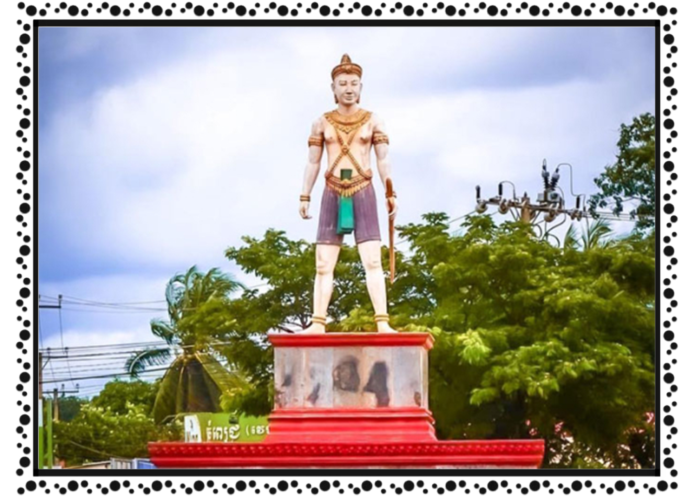

ខេត្ត និងក្រុងនៃព្រះរាជាណាចក្រកម្ពុជា
ត្បួងឃ្មុំ
 ត្បូងឃ្មុំ (អ.ស.អ.: [tɓouŋ kʰmum]) គឺជាខេត្តនៃកម្ពុជាស្ថិតនៅវាលទំនាបកណ្ដាលនៃទន្លេមេគង្គ។ មានព្រំប្រទល់ជាប់ខេត្តកំពង់ចាមនៅខាងលិច ក្រចេះនៅខាងជើង ព្រៃវែងនៅខាងត្បូង និង មានព្រំដែនអន្តរជាតិរួមជាមួយវៀតណាមនៅខាងកើត។ ទីរួមខេត្តហើយក៏ជាទីក្រុងធំបំផុតគឺសួង។ ខេត្តត្បូងឃ្មុំត្រូវបានបង្កើតឡើងនៅពេលដែលខេត្តកំពង់ចាមត្រូវបានបំបែកជាពីរដោយព្រះរាជក្រឹត្យឡាយព្រះហស្តលេខានៅថ្ងៃទី៣១ ខែធ្នូ ឆ្នាំ២០១៣ ដោយព្រះមហាក្សត្រព្រះបាទនរោត្តមសីហមុនី តាមអនុសាសន៍របស់សម្តេចនាយករដ្ឋមន្ត្រី ហ៊ុន សែន។ ខេត្តនេះមានភាគរយខ្ពស់បំផុតនៃចំនួនជនជាតិចាមដែលកំពុងតែរស់នៅក្នុងប្រទេសគឺ ១១.៨% ។ កោះទន្សាយតាំងនៅប្រហែល ៤,៥ សហាតិមាត្រ ភាគនិរតីនៃខេត្តកែប។ ពួកអ្នកទេសចរណ៍ត្រូវបានទាក់ទាញដោយឆ្នេរខ្សាច់សក្បុសពីរកន្លែង និងទឹកសមុទ្ររាក់ដែលសាកសមសម្រាប់ការហែលទឹកលេង។ បាតសមុទ្រមាន ផ្កាថ្មប៉ប្រះទឹកចម្រុះផ្សេងៗ សត្វ និង រុក្ខជាតិសមុទ្រដែលទាក់ទាញឱ្យមានពួកអ្នកស្រាវជ្រាវ និង អ្នកបរិស្ថានវិទ្យាចូលមកសិក្សា។ឈ្មោះកោះទន្សាយបានមកពីពាក្យថា រំសាយ។ កាលមួយនោះដើម្បីចៀសឱ្យផុតពីកងទ័ពរបស់នាយបញ្ជាការ ព្រះអង្គម្ចាស់សាគររាជមានការអស់សង្ឃឹមយ៉ាងខ្លាំងដោយសារតែពួករាជបរិវាររបស់ទ្រង់មានសភាពនឿយហត់អស់ទៅហើយ។ ព្រះអង្គបានដឹកនាំកងទ័ពដែលសេសសល់ឆ្លងកាត់សមុទ្រទៅកាន់កោះមួយនៅចំពីមុខក្រុងកែប ដែលជាកន្លែងកងទ័ពបានចែកផ្លូវគ្នា។ ដោយហេតុនោះហើយ កោះនេះក៏ត្រូវគេហៅថាកោះរំសាយ កោះអម្សាយ កោះអន្សាយ និង កោះទន្សាយ ដែលយើងបានស្គាល់ដូចសព្វថ្ងៃនេះ។ រឿងមួយទៀត តាមរយៈអ្នកស្រុកដែលបានរស់នៅទីនោះតាំងពីក្មេងនៅកែបមុនឆ្នាំ ១៩៧៥ ថាកោះនេះពីមុនហៅថា កោះអន្តាយ។ វាមិនមានន័យច្បាស់លាស់ទេចំពោះពាក្យមួយនេះ។ កោះទន្សាយមានផ្ទៃដី ពីរសហាតិមាត្រក្រឡា។ នៅក្នុងសម័យសង្គមរាស្ត្រនិយមដឹកនាំដោយព្រះបាទនរោត្តម-សីហនុ កោះទន្សាយបានក្លាយជាកន្លែងឃុំឃាំងអ្នកទោស ហើយពួកអ្នកទោសទាំងនោះក៏ជាអ្នកការពារកោះនោះដែរ។ គេនៅឃើញមានស្លាកស្នាមខ្លះៗ បន្សល់ទុកដូចជា ផ្លូវរទេះសេះ និង ផ្ទះឈើប្រក់ស្បូវដែលសាងសង់ឡើងនាសម័យនោះ។ ភាគច្រើននៃហេដ្ឋារចនាសម្ព័ន្ធនេះត្រូវបានបំផ្លិចបំផ្លាញដោយធាតុអាកាស និង សង្គ្រាមជាច្រើនទសវត្ស។ សព្វថ្ងៃនេះកោះទន្សាយគឺជាកន្លែងទាក់ទាញទេសចរណ៍ដ៏សំខាន់សម្រាប់ខេត្តកែប។ មានផ្ទះសំណាក់ប្រហែល ៨ និង ភោជនីយដ្ឋានប្រហែល ៥ បានបើកក្នុងមូលដ្ឋានកោះនោះ ដែលបម្រើសេវាអាហារសមុទ្រស្រស់ៗដ៏សំខាន់ដូចជា ក្ដាម ព្រោនបង្កង និង ត្រី។ ពេលថ្ងៃ កោះអាចនឹងមមាញឹកខ្លាំងជាមួយពួកទេសចរណ៍នៅពេលថ្ងៃ ដែលចាកចេញរង្វង់ម៉ោង៤ល្ងាច អញ្ជឹងហើយនៅពេលថ្ងៃលិចមានតែមនុស្សពីរបីនាក់ទេស្នាក់នៅពេញមួយយប់នៅទីនោះ។ អគ្គីសនីមានត្រឹមតែពីម៉ោង ៦-៩ យប់ តាមរយៈម៉ាស៊ីនភ្លើង។ ទឹកមានក្នុងរយៈពេលខ្លីកំឡុងខែប្រាំង (ធ្នូ-មេសា) និង ទូកវែងៗដែលមានធុងទឹកធំៗផ្គត់ផ្គង់នូវភាពខ្វះខាត។ សព្វថ្ងៃ មានប្រជាជន ៧ គ្រួសាររស់នៅលើកោះនេះ។ ពួកគេប្រកបរបរនេសាទនិងដាំដើមដូង។